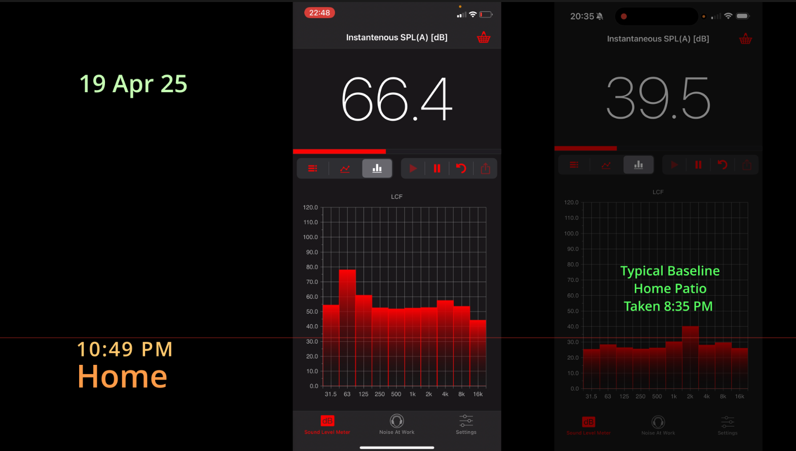

Overview
Over the past few years, outdoor electronic music parties (commonly known as "doof parties") have increased significantly in our area. We do not think these events should be banned. We want them done properly — by the book — within the law, with the appropriate approvals, safety plans, infrastructure, and genuine community engagement.
Right now, our road and community lack the facilities to safely and responsibly host events of this scale. This website documents the concerns raised by long-term residents and provides resources on how to run events correctly.
As there are many aspects to the community concerns, we have broken down the issues into a series of pages. Use the tiles below to navigate to detail regarding each issue.
The Council & Law page contains references to previous attempts to address these concerns with council, and provides links to relevant legislation, guidance, and contacts.
Evidence of Noise Monitoring
Documentation of noise levels from multiple events - View full noise analysis →
Key Issues
Size/scale
Events have grown from "small gatherings" to festivals of 150-400+ people, far exceeding what can be safely managed on private land.
Infrastructure
Public roads become sprawling campsites, blocking access and creating safety hazards. Emergency vehicle access is compromised.
State of the Road
Fox Road is not designed for this level of traffic. Reckless driving, congestion, and road damage are recurring problems.
Noise
Industrial-level bass noise (30+ dB over background) lasting 8-36+ hours, breaching NSW noise regulations.
Frequency
Event frequency and scale have been increasing, with multiple large gatherings now occurring several times per year, with little to no advance notice to the broader community.
Community
Lack of meaningful consultation with neighbours. The "ask for forgiveness, not permission" approach is inconsiderate.
Wildlife Impact
Excessive noise disrupts forest species, causing communication breakdowns, chronic stress, and habitat displacement.
Proximity
Recent events are located close to residential areas with young families, not beyond existing dwellings.
The Party Business
Commercial operations generating $36K-$112K+ per event from ticket sales alone, operating without proper licensing, safety plans, or professional security.
Council & Law
Council complaints, reference numbers, email correspondence, and legal requirements for NSW/Lismore events.
Photo Galleries
Visual documentation of rubbish/environmental impact and event promotion materials showing the commercial scale.
Todo & Evidence Plan
Structured tasks for gathering documentation: pricing, comms, incidents, and more.